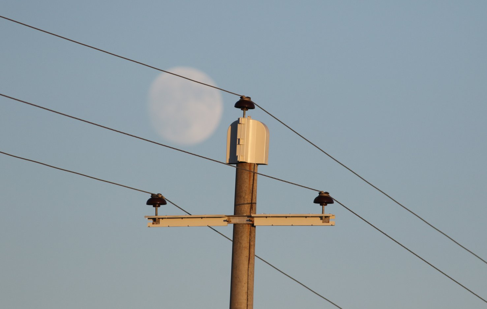
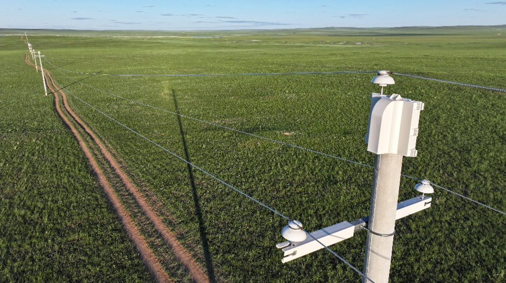
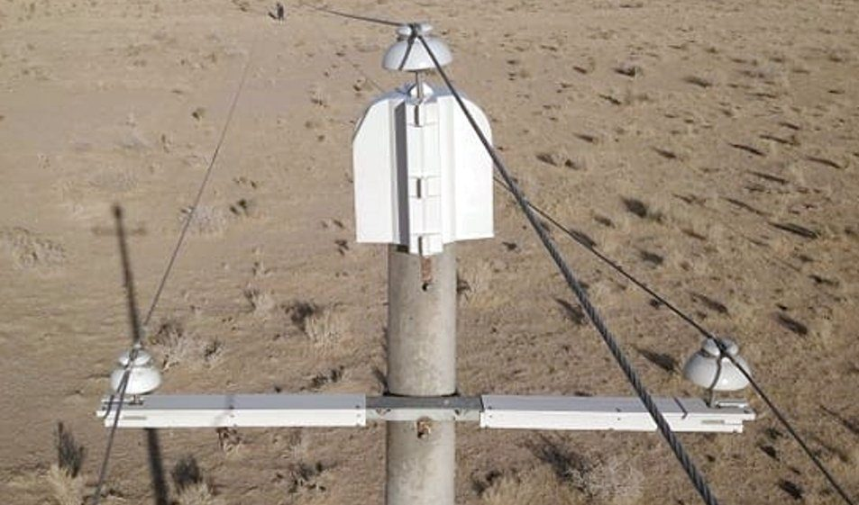
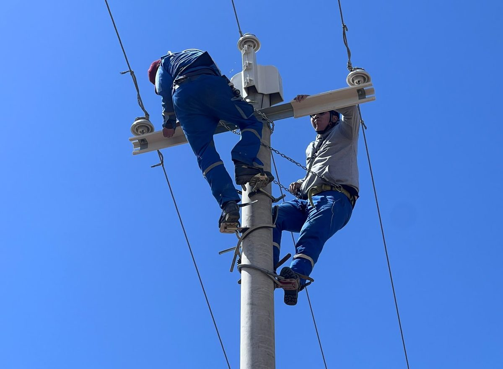

A proven, low-cost solution exists. This website explains the problem, the solution, and what electricity distribution companies and consumers can do right now.
Problem
The expansion of Mongolia's electricity distribution network since the 2000s introduced a silent danger for birds. Standard line pole design caused a bird's death — and thousands of raptors were electrocuted in the steppe.
Raptors were electrocuted every year in Mongolia before a mitigation project was done in 2022 — including over 4,000 Saker Falcons, a globally endangered species.
Mongolia's steppe zone has abundant rodent prey — Brandt's Vole, Mongolian Gerbil, and Daurian Pika. This attracts large numbers of raptors to hunt near power lines. When rodent populations peak, electrocution rates increase. Every distribution line in the steppe zone was potentially lethal.
Standard 10–15 kV distribution poles use steel-reinforced concrete poles with galvanized steel crossarms and upright pin insulators. A bird perched on the pole simultaneously contacts two energized conductors — or one conductor and a grounded surface — and is electrocuted.
With the standard configuration, every single pole along a distribution line posed a high electrocution risk. There are tens of thousands of such poles across Mongolia's steppe zone.
The problem extends beyond Mongolia's borders. High mortality of Mongolian Saker Falcons has also been recorded in their main wintering areas in Qinghai, China — research funded by Abu Dhabi identified electrocution as a key driver of population decline.
The Solution
The Mohamed Bin Zayed Raptor Conservation Fund developed a purpose-built insulation cover system through extensive experimental trials across Mongolia. The result: a simple, durable, low-cost cover that eliminates electrocution risk without affecting power supply reliability.
A two-piece insulated cap fits over the pole top, covering all exposed galvanized steel mounts and the concrete top edge. This eliminates contact between a perched bird and the top-phase conductor.
A two-piece cover over the top of the steel crossarm where birds perch directly beside the pin-insulators. Attaches with bolts — no existing hardware needs to be removed or adjusted.
A two-piece cover over the bottom of the steel crossarm where phase II and III conductor wires are connected. Larger birds such as eagles can bridge this gap — the bottom cover closes this electrocution pathway completely.
Anchor poles receive a pole cap cover plus jumper wire insulation (ARK sheath cover) on all conductor connections. All connections at substations and additional equipment are also insulated.
Research
Four survey teams inspected 69 mitigated power lines across 15 provinces in August 2023, counting electrocuted bird carcasses under poles to measure mitigation effectiveness. The results are conclusive.
The first covers were installed in December 2018. By August 2023, after up to 4 years in Mongolia's harsh climate, the failure rate was zero.
Photos from field surveys and installation works across Mongolia.




Projects
The MBZRCF Initiative (2018–2022) mitigated 69 distribution lines across 15 provinces in partnership with seven regional electricity distribution companies. Work is ongoing — including new collaborations with Ulaanbaatar Railway.
Following a 5-year MoU signed with Mongolia's Ministry of Environment and Climate Change in February 2019, MBZRCF funded and coordinated the retrofit of the most dangerous distribution lines across Mongolia's steppe zone. Implementation was carried out by the Mongolian Bird Conservation Center and the Wildlife Science and Conservation Centre (WSCC).
A model example of a public railway company partnering with conservation organizations. Ulaanbaatar Railway in Choir collaborated with MBCC — with insulation covers donated by MBZRCF — to mitigate their powerlines in Govisumber Province. Line 1 (885 poles) is fully mitigated. Line 2 (285 poles) is 100% complete. This demonstrates how any energy utility can act with minimal cost and maximum impact.
| Company | Lines | Crossarms | Pole tops | Anchor poles |
|---|---|---|---|---|
| Western ESC / Bayan-Olgyi EDC | 17 | 6,467 | 6,472 | 79 |
| Altay-Uliastay ESC | 14 | 5,295 | 5,250 | 0 |
| Bayankhongor EDC | 9 | 3,177 | 3,287 | 227 |
| Southern Region EDC | 4 | 2,455 | 2,332 | 196 |
| Baganuur-Southeastern Region EDC | 13 | 6,695 | 6,511 | 0 |
| Eastern ESC | 11 | 2,438 | 2,548 | 61 |
| Total | 68 | 26,527 | 26,400 | 563 |
Take Action
Mitigating your distribution lines is straightforward, low-cost, and compliant with Mongolia's national standard MNS 6518:2015. Here is how to start.
Distribution power lines of 6kV, 10kV and 15kV with standard concrete poles and steel crossarms are high risk. MBCC can assist with field surveys to assess and prioritize your lines.
A trained team surveys each pole — recording type, pin configuration, and condition. This determines the exact cover quantities needed before procurement.
Covers are available through MBCC / MBZRCF or can be independently procured. They meet MNS 6518:2015 requirements. Contact MBCC for supplier information and specifications.
Installation requires a power shutdown for worker safety. Your existing line engineers can install covers directly once the line is de-energized. MBCC provides training and supervision support.
Annual monitoring of carcasses under poles verifies effectiveness and satisfies MNS 6518:2015 compliance. MBCC can assist with monitoring protocols.
Implementation, field surveys, training, monitoring support
Office 302, GB Center, Baga toiruu 36/2
8th khoroo, Sukhbaatar District
Ulaanbaatar 14192, Mongolia
Cover development, equipment donation, and international funding